02-01 — pistol híbrido — antes/depois (Asset Studio)
Antes — perspectiva (2812 tri)
Depois — perspectiva (3952 tri)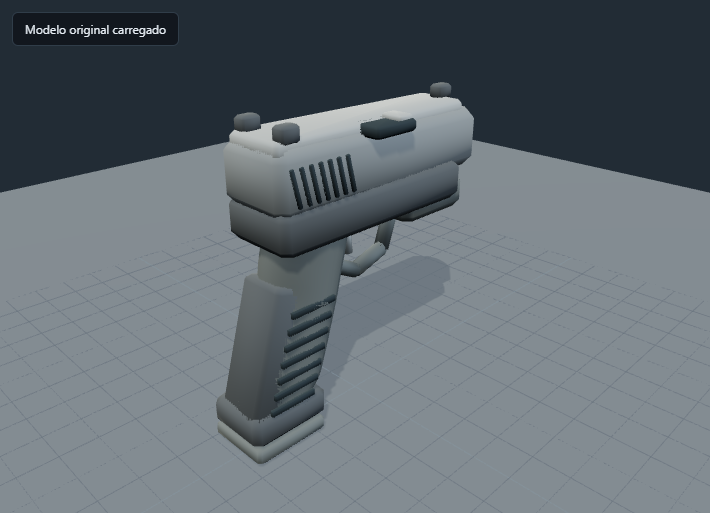
Antes — vista direita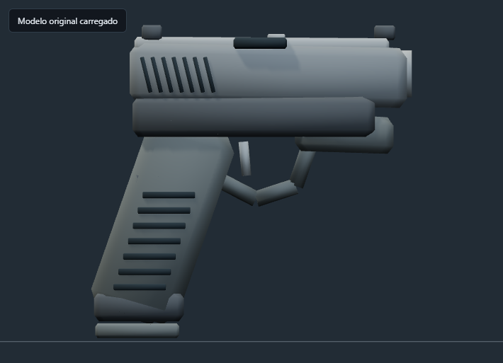
Depois — vista direita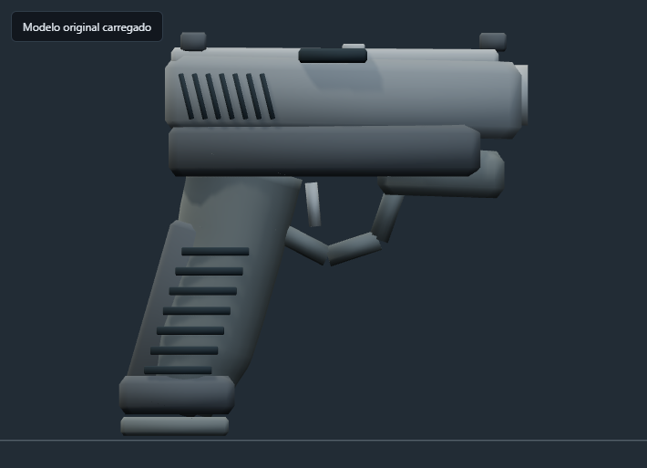
Antes — frente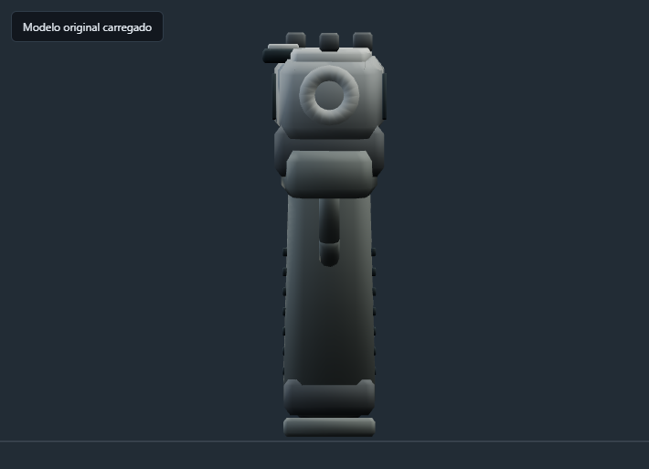
Depois — frente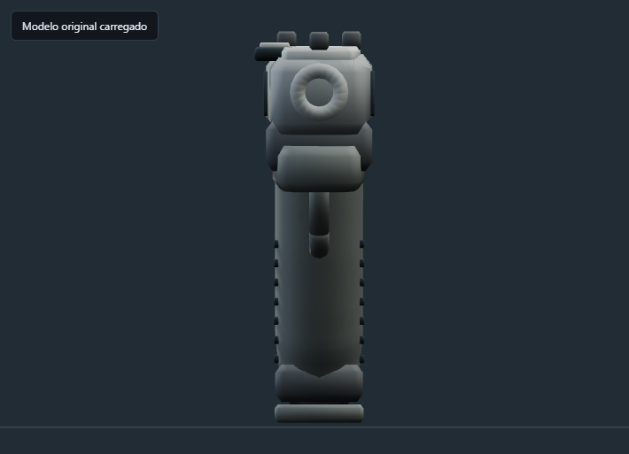
Antes — superior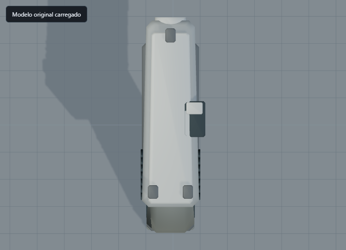
Depois — superior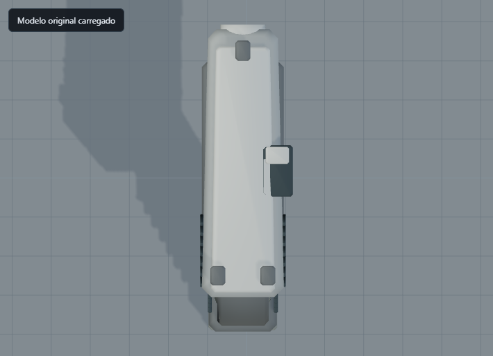
Antes — wireframe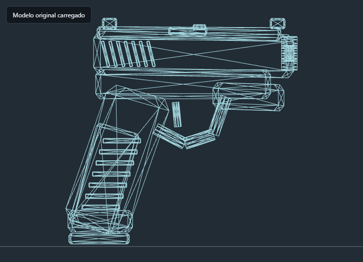
Depois — wireframe (grip loftado)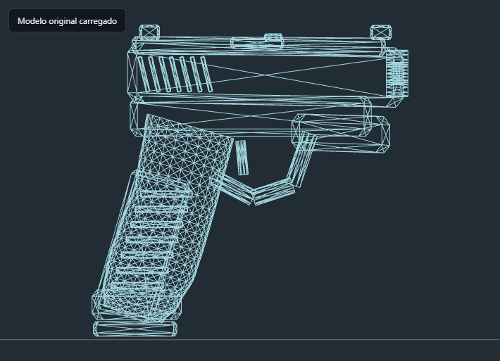
Antes — sólido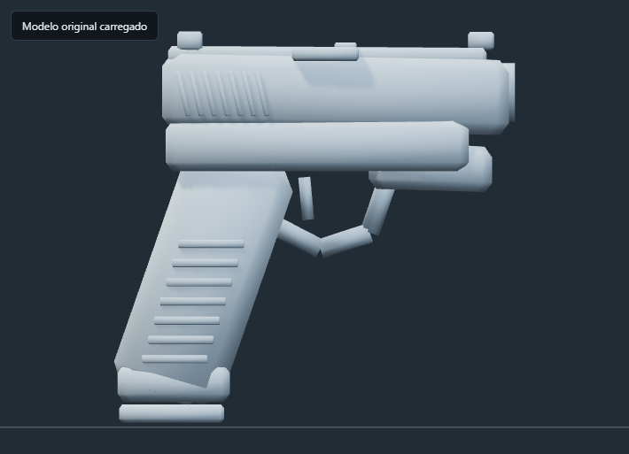
Depois — sólido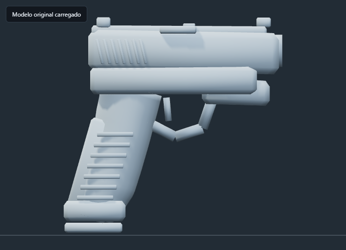